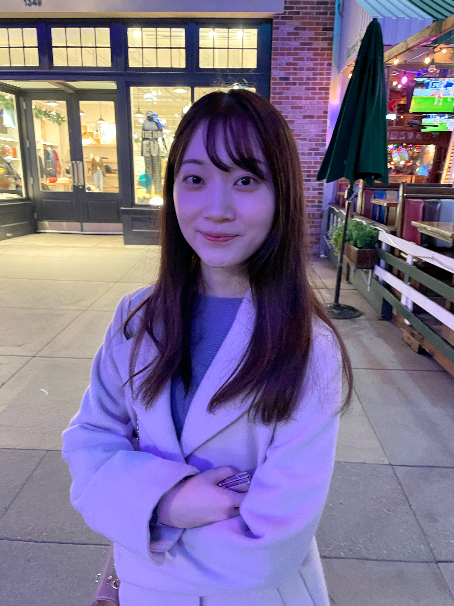

Saki Okubo

I'm a startup founder and software engineer based in San Francisco BayArea.
Work
- Supernatural (San Francisco BayArea) - Ads for AI chatbots - Founder (2024 - present)
- Building a service helps AI chatbots monetize with LLM-based seamless ads
- Google (San Francisco BayArea) - Google Cloud Security, Google Nest Speaker - Software Engineer (2022 - 2024)
- Keywords: Java, Kotlin, Golang, Python, SQL, Colab, gRPC, One Platform API, Flume, Google Cloud, Cloud Security, AI, Privacy
- Implemented backend of a GCP Advisory Notification configuration page
- Analyzed Google Cloud activity data to detect anomalous event trends
- Implemented Binary Authorization break-glass detectors for Google Cloud Security Command Center
- Could Privacy Reviewer for AI and Security products
- Microsoft (Tokyo, Japan) - Windows Touch Keyboard - Software Engineer (2020 - 2022)
- Keywords: C++, CX, XAML, UI programming, Windows
- Implemented text input and touch keyboard personalization settings feature for Windows 11
- Implemented the gesture cursor feature for touch keyboard (Move the cursor by pressing and holding a finger on spacebar)
- Implemented TeachingTip framework for touch keyboard
Education
- Bachelor of Law, Keio University (2020)
Projects
- CatCatCat - An AR app for Apple Vision Pro lets you create a cat that moves around a room and avoids obstacles
- sapipiru - A project to build a toy browser in Rust
- Kavraki - An iOS app for controlling Insta360 or GoPro cameras to shoot stereo VR videos, and apps for Meta Quest and Apple Vision Pro to view them
Awards
- ACM-ICPC 2017 Asia Tsukuba Regional
- ACM-ICPC 2016 Japan Online First-Round Contest Women's First Award
- CODE BLUE 2017 (international information security conference) U20 speaker and won a scholarship
- Supercomputing Contest 2014 First grade certification